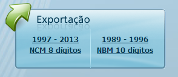
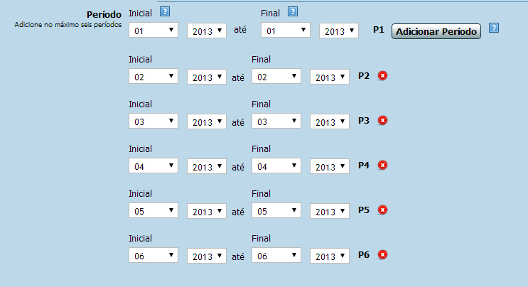
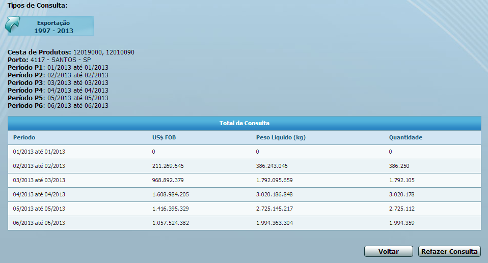

Economia / Arquivo
Passo-a-Passo: Data Scraping – Aliceweb
O que era preciso fazer para extrair os dados brasileiros de comércio exterior e como consultar a série hoje.
As seis observações visíveis no AliceWeb aparecem separadas da nova consulta da unidade aduaneira de Santos no Comex Stat.
Publicação original
Na publicação sobre os dados de atrasos nos aeroportos tangenciei um tema que é recorrentemente o principal obstáculo na análise de algum fenômeno relevante a partir de um conjunto de dados: a dificuldade associada à extração de bases de dados consistentes e organizadas, mesmo que disponibilizadas de forma padronizada. Para os que não ouviram falar, Data scraping (ou raspagem de dados) é nome que se dá à técnica através da qual procura-se extrair dados proveniente de algum programa para algum outro programa de computador, de uma maneira legível; web scraping nada mais é que um subgrupo para o qual a técnica consiste em extrair dados disponíveis em websites.
Apesar de existirem diversas maneiras de extrair dados de websites, que podem envolver diversas linguagens de programação, parte dos dados disponíveis podem ser extraídos de maneira bastante simples que não exigem um grande conhecimento prévio de programação. No “Passo-a-Passo: Infográfico Aeroportos” comentei como com algumas poucas linhas armazenadas no Google Apps Script me possibilitaram coletar dados diários sobre os atrasos nos aeroportos. Minha ideia é introduzir aqui uma maneira simples de extração de dados, a partir de um conjunto de informações com uma organização não muito amigável para a construção de uma base de dados grande e robusta.
Fonte dos dados: minha ideia é utilizar como exemplo para data scrapping os dados disponíveis no AliceWeb. Segundo definição do próprio site,
O Sistema de Análise das Informações de Comércio Exterior, denominado AliceWeb, da Secretaria de Comércio Exterior, do Ministério do Desenvolvimento, Indústria e Comércio Exterior, foi desenvolvido visando modernizar as formas de acesso e a sistemática de disseminação das estatísticas brasileiras de exportações e importações.
Em outras palavras, o sistema em questão permite o acesso a uma extensa base de dados sobre o desempenho do comércio internacional brasileiro, com um nível de desagregação e detalhe bastante elevado. Porém, como nem tudo é perfeito, a organização e estrutura de consulta do sistema pode ser limitante para alguns tipos de pesquisa. Acessando a consulta “Exportação 1997 – 2013 NCM 8 dígitos”, por exemplo, e selecionando a opção “Cesta de produtos” nos deparamos rapidamente com a restrição Adicione até 60 produtos. Tal impedimento faz com que qualquer consulta a uma cesta de bens mais ampla tenha que ser subdividida em diversos conjuntos de 60 itens. Por outro lado, se o objetivo for a coleta de uma base de dados mensal de um único item encontraremos o aviso Adicione no máximo seis períodos ao tentar incluir todos os meses desejados. A solução “braçal” para esses obstáculos (repetir diversas vezes a consulta) pode ter um custo muito alto dependendo a quantidade de informação que alguém deseja extrair dessa base.
Solução: possivelmente, existem diversas soluções possíveis para transpor essas barreiras. Escolhi explicar aqui uma que parece facilmente replicada e que não exige grandes conhecimentos prévios: iMacros. iMacros é uma extensão que pode ser instalada no Firefox, Google Chrome ou Internet Explorer e que permite automatizar a navegação em websites e extrair dados dos mesmos. Um grande ponto positivo da extensão é a gravação de tarefas realizadas pelo usuário transformando-as em um código replicável. Em palavras, ao ativar o modo de gravação, o aplicativo registra todos os cliques e outras interações realizadas no navegador.
Exemplo: como já mencionei, utilizarei a base de dados da AliceWeb como exemplo de uso do iMacros. Os parâmetros básicos da pesquisa são:
- Fluxo do comércio: Exportação
- Tipo de produto: Soja
- Porto: Santos
- Período: Mensal, entre janeiro de 2000 e dezembro de 2013
O tipo de carga e o porto escolhido são meramente ilustrativos. O importante é demonstrar as funcionalidades da extensão e as variáveis de escolhida disponíveis para uma consulta. O primeiro passo é acessar o site da AliceWeb (http://aliceweb2.desenvolvimento.gov.br/) o qual exige apenas o cadastro prévio do usuário. Após o login, entrar em

e depois na parte de exportações até 2013:


A partir de então podemos começar a “gravar” a interação com o site para criar a automatização necessária para baixar os dados: clicando no ícone do iMacros

no canto superior direito do navegador e depois em

Em

vamos adicionar os códigos 12019000 (“Soja, mesmo triturada, exceto para semeadura”) e 12010090 (“Outros grãos de soja, mesmo triturados”). Em “Porto” vamos selecionar “SANTOS” e em períodos, vamos adicionar 6 períodos, conforme a figura abaixo:


Após clicar em consulta temos o seguinte resultado:


A última ação gravada será clicar em “Refazer consulta” como se fôssemos começar novamente a consulta e alterar apenas os períodos após a qual podemos interromper a gravação clicando no símbolo do iMacros. O resultado dessa interação é o código disponibilizado nesse link. A ideia básica para conseguir automatizar a coleta de dados é entender como a interação com o site foi traduzida em um código e descobrir quais são as partes que podem ser transformadas em variáveis. Em primeiro lugar, temos a inclusão do código NCM dos produtos, associada as seguintes linhas:
TAG POS=1 TYPE=INPUT:TEXT FORM=ID:frmConsulta ATTR=ID:valorNcmCesta CONTENT=12019000
TAG POS=1 TYPE=BUTTON FORM=ID:frmConsulta ATTR=ID:btnAddProduto
Ou seja, ao replicarmos essas duas linhas diversas vezes variando o trecho CONTENT=12019000, podemos incluir quantos itens forem desejados (até o limite de 60 itens). Em seguida, foi realizada a seleção do porto identificada por
TAG POS=1 TYPE=SELECT FORM=ID:frmConsulta ATTR=ID:porto CONTENT=%4117
o que permite descobrir a identificação do porto de Santos na base de dados da AliceWeb (código 4117). Ao clicar nos diferentes Portos é possível coletar o número associado a cada um deles. Por fim a seleção dos períodos se dá através da definição do mês/ano inicial e final de cada um dos seis períodos. Por fim, adicionei três linhas referentes a extração dos dados cuja explicação encontra-se abaixo
TAG POS=1 TYPE=TABLE ATTR=TXT:* EXTRACT=TXT copia a tabela do resultado
SAVEAS TYPE=EXTRACT FOLDER=* FILE=soja-santos-exp.txt salva a tabela com o resultado em um arquivo de texto
WAIT SECONDS=3 aguarda três segundos antes de recomeçar o código
A automatização dessa coleta de dados se dá através da replicação do código desde a primeira linha associada a seleção do período (linha 10 do bloco de notas) até a última linha, alterando apenas os meses e anos selecionados. Para realizar essa replicação o ideal é usar algum software familiar que permita que essa tarefa não seja também braçal (no meu caso criei uma máscara para o código no Excel, usando as células para inserir os anos e meses nas respectivas linhas). O resultado é a um bloco de notas (link) com os dados dos períodos selecionados que podem ser inseridos no Excel (ou em algum outro software) e tratados.
Enfim, a mensagem principal desse post é que embora seja recorrente a incompatibilidade entre a disponibilização de uma informação e o uso que queremos dar para ela, é possível encontrar ferramentas livres e simples que permitam atingir o objetivo desejado na coleta de dados. Como de costume, deixo abaixo um formulário para aqueles que quiserem maiores explicações ou maiores detalhes sobre a coleta desses dados.